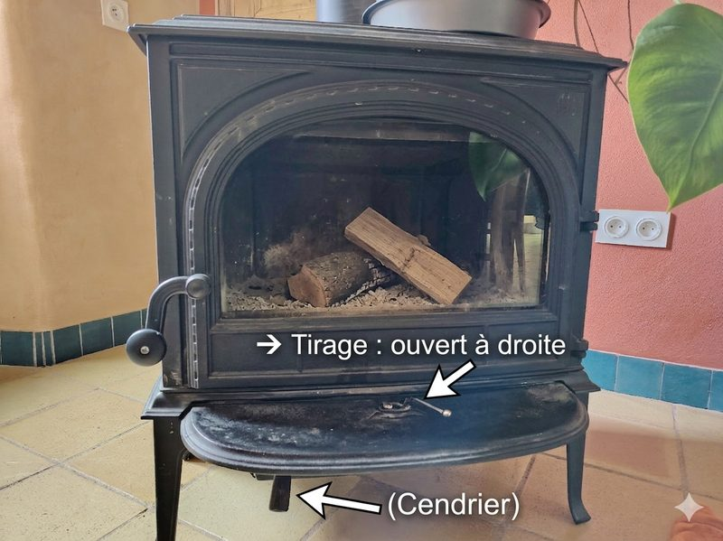

Bonjour et bienvenue dans ma maison ! 🎉
J'espère que vous y passerez un séjour ressourçant et que vous profiterez de notre belle région. Cette maison est ma maison — j'y ai mis beaucoup de soin et d'amour dans sa rénovation éco-responsable. Traitez-la bien et elle vous le rendra !
Je suis votre voisine directe et reste disponible pour vous conseiller sur la région ou vous dépanner si besoin. N'hésitez pas à m'appeler !
Avec plaisir, Sidonie 🌿
06 64 51 32 45
06 64 51 32 45
📍
Adresse
12 lieu-dit Badarel
63570 Bansat
63570 Bansat
Dernière maison du hameau, côté gauche (est)
📶
Code WiFi
325GAAMDBA4
Disponible dans toute la maison
📞
Votre hôte
Sidonie
06 64 51 32 45 · Voisine directe
🕐
Horaires
Arrivée dès 16h00
Départ avant 11h00
♿
Accessibilité
⚠️
Ce logement n'est pas adapté aux personnes à mobilité réduite (PMR).
Les chambres et la salle de bain sont à l'étage — escalier obligatoire.
Les chambres et la salle de bain sont à l'étage — escalier obligatoire.
👁️
Troubles visuels
Ce document est en grande police avec fort contraste et pictogrammes. Il reprend toutes les informations du livret principal dans un format lisible.
📞
Besoin d'aide spécifique ?
Contactez-moi avant votre arrivée. Je ferai mon possible pour adapter votre accueil.
Sidonie : 06 64 51 32 45
Sidonie : 06 64 51 32 45
🔑
Arrivée & Clés
🗺️
Comment trouver la maison
Badarel est un hameau à plusieurs kilomètres de Bansat. C'est la dernière maison du hameau, côté gauche (est), entourée d'une barrière en bois.
🔑
Remise des clés
Je vous accueille en personne si possible — sinon je vous indique l'emplacement des clés à l'avance. Je vous contacterai avant votre arrivée.
🚗
Parking gratuit
Devant la maison. Utilisez les cales derrière vos roues si besoin et n'oubliez pas de laisser une vitesse !
🏠
La Maison
🛏️
Les chambres (à l'étage)
Chambre 1 : 2 lits 90×190 · couettes 140×200
Chambre 2 : lit 140×190 · couette 240×220
Chambre 3 : lit 140×190 · couette 240×220
2 oreillers 60×60 par personne.
Chambre 2 : lit 140×190 · couette 240×220
Chambre 3 : lit 140×190 · couette 240×220
2 oreillers 60×60 par personne.
🛁
Linge de maison — en option
Draps et serviettes non inclus par défaut :
20€
par chambre
Draps & taies
Draps & taies
5€
par personne
Serviette (1 grande + 1 petite)
Serviette (1 grande + 1 petite)
💡
Mauvaise taille de draps ? Ne pas utiliser la literie sans draps.
Appelez Sidonie : 06 64 51 32 45
Appelez Sidonie : 06 64 51 32 45
🪴
Fourni à votre arrivée
Torchons · Savon · Shampoing · Liquide vaisselle · Éponge · Produits ménagers · Bois pour le poêle
📚
Pour vous divertir
Jeux de société · BD · Livres · Dépliants sur la région
→ sur le meuble du salon
→ sur le meuble du salon
⚙️
Équipements
🔥
Poêle à bois
Le bois est dans l'abri bois en face de la maison. Des allume-feux sont disponibles.
Conseils : placez 3 bûches moyennes et l'allume-feu au croisement des 3 bûches. Entrouvrez le cendrier pour améliorer le tirage le temps du démarrage.
Conseils : placez 3 bûches moyennes et l'allume-feu au croisement des 3 bûches. Entrouvrez le cendrier pour améliorer le tirage le temps du démarrage.

🔴 Tirage · 🔵 Cendrier
⚠️
IMPORTANT : Ne laissez pas le cendrier ouvert sans surveillance.
ATTENTION : Ne brûlez pas de déchets ou de bois traité.
ATTENTION : Ne brûlez pas de déchets ou de bois traité.
❄️
PAC réversible — chauffage & climatisation
Télécommande sur le meuble du salon → contrôle la pompe à chaleur au RDC. Le poêle à bois est généralement suffisant. Radiateurs électriques à l'étage (thermostats sur les appareils).
🌍 Merci de faire un usage raisonné du chauffage et de la climatisation !
🌍 Merci de faire un usage raisonné du chauffage et de la climatisation !
🍽️
Lave-vaisselle
Appuyez sur ON, puis tournez la molette jusqu'au point blanc. Pastilles sous l'évier.
📺
Télévision connectée
🎮 Grande télécommande : allumer / éteindre seulement
🕹️ Petite télécommande : naviguer dans les menus
• TF1+ → TF1, TMC, TFX…
• 6play → M6, W9, 6ter…
• Molotov TV → toutes les autres chaînes
• Netflix → profils Invité et Jeunesse
🕹️ Petite télécommande : naviguer dans les menus
• TF1+ → TF1, TMC, TFX…
• 6play → M6, W9, 6ter…
• Molotov TV → toutes les autres chaînes
• Netflix → profils Invité et Jeunesse
🥩
Plancha & mini-crêpes
Dans le placard du salon. À votre disposition !
🧹
Matériel ménager
Aspirateur · Serpillière · Produits ménagers · Étendoir · Fer à repasser
→ dans le placard du salon
→ dans le placard du salon
🌿
Vie à la maison & Éco-gestes
🏺
Sol en tomettes — attention aux taches !
En cas de renversement (vin rouge, café, tomate…), nettoyez immédiatement — une tache laissée risque d'être définitive.
♻️
Tri sélectif
À la sortie du hameau (gauche), 3 conteneurs :
• Tout-venant
• Recyclables (papier, carton, emballages)
• Composteur
Verre : Vernet-la-Varenne (plan d'eau), Sarpoil, La Malotière…
• Tout-venant
• Recyclables (papier, carton, emballages)
• Composteur
Verre : Vernet-la-Varenne (plan d'eau), Sarpoil, La Malotière…
🌱
Compost
Derrière la maison côté nord — sortez par la cuisine et tournez à droite.
💡
Économies d'énergie
Éteignez les lumières en quittant une pièce. Pas de fenêtres ouvertes avec le chauffage. Éteignez la PAC en cas d'absence. Merci pour la planète ! 🌍
🧹
Départ — avant 11h00
🧹
Pour que la maison soit toujours propre pour vous accueillir,
un forfait ménage de 70€ est obligatoire.
Il couvre le nettoyage complet. Merci de laisser la maison dans un état correct !
un forfait ménage de 70€ est obligatoire.
Il couvre le nettoyage complet. Merci de laisser la maison dans un état correct !
🍽️Vaisselle propre et rangée
🗑️Poubelles vidées
🛏️Linge en tas sur la table du salon
🪟Fenêtres fermées · Lumières éteintes
🔑Clés déposées à l'endroit convenu
🙏
Un petit mot ou un avis sur votre expérience me ferait vraiment plaisir !
Et si vous avez des remarques, je suis toujours ouverte aux retours. Merci pour votre confiance 🌿
Et si vous avez des remarques, je suis toujours ouverte aux retours. Merci pour votre confiance 🌿
🥾
À faire dans la région
Les incontournables autour de Badarel
🏊 Plan d'eau du Vernet · 5 min
💎 Musée de l'Améthyste · 5 min
🦁 Parc Animalier Ardes · 30 min
🏰 Sauxillanges médiéval · 8 km
🌋 Puy de Dôme · 45 min
🏔 Puy de Sancy · 50 min
🛒 Marché Issoire (sam.) · 20 min
🎶 Guinguette Sauxillanges · 8 km
⛪ La Chaise-Dieu · 45 min
🧀 Saint-Nectaire · 30 min
📞
Contacts Utiles
En cas d'urgence médicale grave : 15 (SAMU) ou 112
15
SAMU
18
Pompiers
17
Police
112
Urgences EU
15
Médecin garde
👩🌾
Sidonie — votre hôte
06 64 51 32 45
Votre voisine directe · Disponible pour tout !
💊
Pharmacie · Vernet-la-Varenne
04 73 71 30 79
2 Place Saint-Roch · 5 min en voiture
🏥
Hôpital d'Issoire
04 73 55 88 00
Avenue du Breuil · ~20 min en voiture